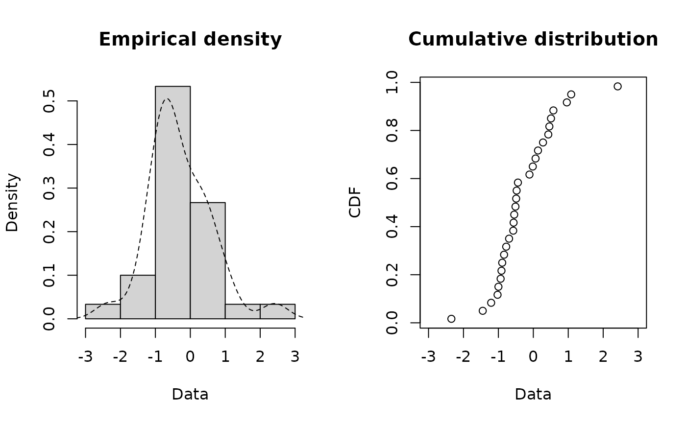
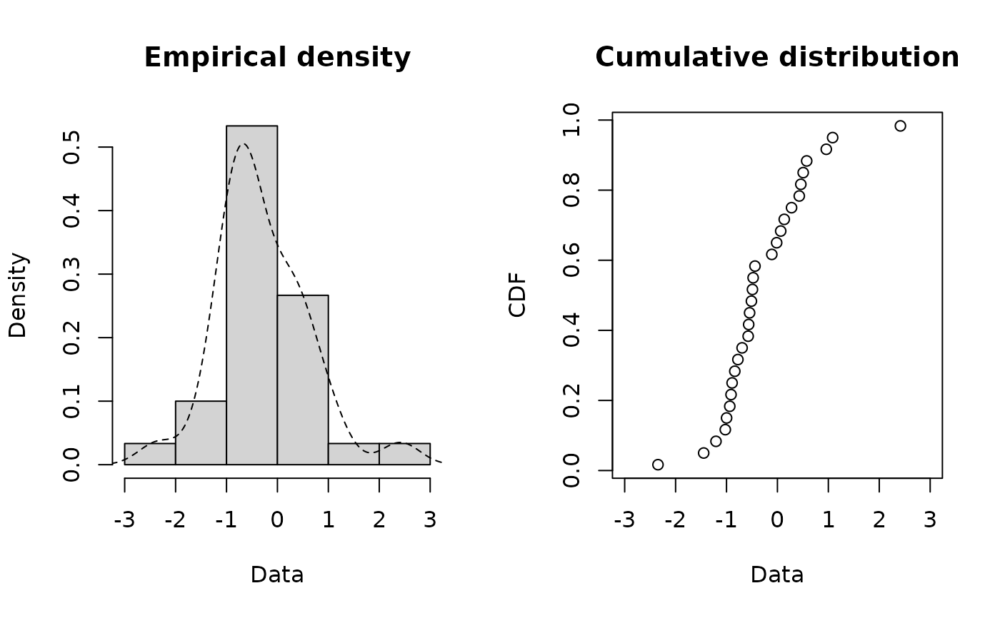
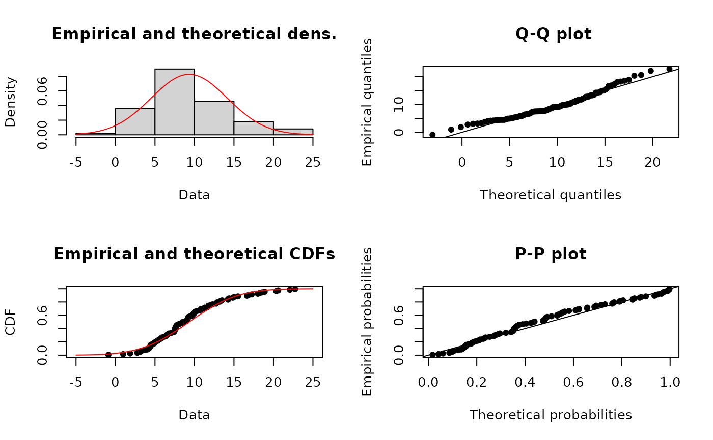
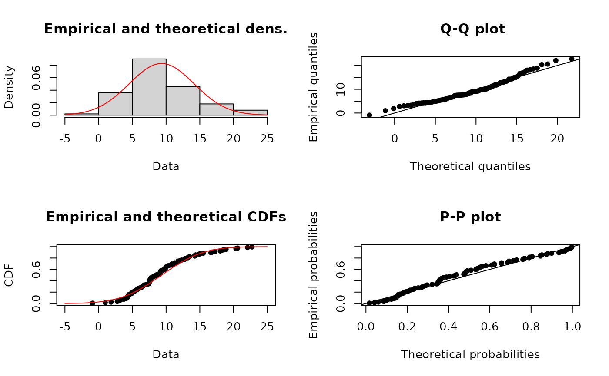
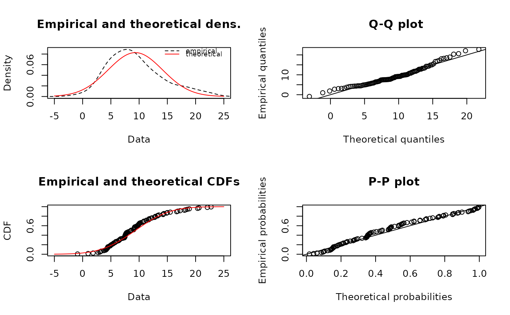
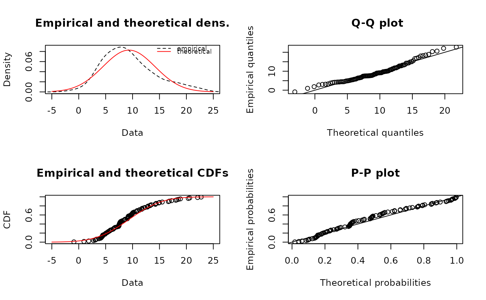

Plot of empirical and theoretical distributions for non-censored data
plotdist.RdPlots an empirical distribution (non-censored data) with a theoretical one if specified.
Arguments
- data
A numeric vector.
- distr
A character string
"name"naming a distribution for which the corresponding density functiondname, the corresponding distribution functionpnameand the corresponding quantile functionqnamemust be defined, or directly the density function. This argument may be omitted only ifparais omitted.- para
A named list giving the parameters of the named distribution. This argument may be omitted only if
distris omitted.- histo
A logical to plot the histogram using the
histfunction.- breaks
If
"default"the histogram is plotted with the functionhistwith its default breaks definition. Elsebreaksis passed to the functionhist. This argument is not taken into account ifdiscreteisTRUE.- demp
A logical to plot the empirical density on the first plot (alone or superimposed on the histogram depending of the value of the argument
histo) using thedensityfunction.- discrete
If TRUE, the distribution is considered as discrete. If both
distranddiscreteare missing,discreteis set toFALSE. Ifdiscreteis missing but notdistr,discreteis set toTRUEwhendistrbelongs to"binom","nbinom","geom","hyper"or"pois".- ...
further graphical arguments passed to graphical functions used in plotdist.
Details
Empirical and, if specified, theoretical distributions are plotted
in density and in cdf. For the plot in density, the user can use the arguments
histo and demp to specify if he wants the histogram using the function
hist, the density plot using the function density, or both
(at least one of the two arguments must be put to "TRUE").
For continuous distributions, the function hist is used with its default
breaks definition if breaks is "default" or passing breaks as an argument if it differs
from "default". For continuous distribution and when a theoretical distribution is specified
by both arguments distname and para, Q-Q plot
(plot of the quantiles of the theoretical fitted distribution (x-axis) against the empirical quantiles of the data)
and P-P plot (i.e. for each value of the data set, plot of the cumulative density function of the fitted distribution
(x-axis) against the empirical cumulative density function (y-axis)) are also given (Cullen and Frey, 1999).
The function ppoints (with default parameter for argument a)
is used for the Q-Q plot, to generate the set of probabilities at
which to evaluate the inverse distribution.
NOTE THAT FROM VERSION 0.4-3, ppoints is also used for P-P plot and cdf plot for continuous data.
To personalize the four plots proposed for continuous data, for example to change the plotting position, we recommend
the use of functions cdfcomp, denscomp, qqcomp and ppcomp.
References
Cullen AC and Frey HC (1999), Probabilistic techniques in exposure assessment. Plenum Press, USA, pp. 81-155.
Delignette-Muller ML and Dutang C (2015), fitdistrplus: An R Package for Fitting Distributions. Journal of Statistical Software, 64(4), 1-34.
Examples
# (1) Plot of an empirical distribution with changing
# of default line types for CDF and colors
# and optionally adding a density line
#
set.seed(1234)
x1 <- rnorm(n=30)
plotdist(x1)
 plotdist(x1,demp = TRUE)

plotdist(x1,histo = FALSE, demp = TRUE)
#> Warning: arguments ‘freq’, ‘main’, ‘xlab’ are not made use of
plotdist(x1,demp = TRUE)

plotdist(x1,histo = FALSE, demp = TRUE)
#> Warning: arguments ‘freq’, ‘main’, ‘xlab’ are not made use of
 plotdist(x1, col="blue", type="b", pch=16)
#> Warning: graphical parameter "type" is obsolete
#> Warning: graphical parameter "type" is obsolete
#> Warning: graphical parameter "type" is obsolete
#> Warning: graphical parameter "type" is obsolete
plotdist(x1, col="blue", type="b", pch=16)
#> Warning: graphical parameter "type" is obsolete
#> Warning: graphical parameter "type" is obsolete
#> Warning: graphical parameter "type" is obsolete
#> Warning: graphical parameter "type" is obsolete
 plotdist(x1, type="s")
#> Warning: graphical parameter "type" is obsolete
#> Warning: graphical parameter "type" is obsolete
#> Warning: graphical parameter "type" is obsolete
#> Warning: graphical parameter "type" is obsolete
plotdist(x1, type="s")
#> Warning: graphical parameter "type" is obsolete
#> Warning: graphical parameter "type" is obsolete
#> Warning: graphical parameter "type" is obsolete
#> Warning: graphical parameter "type" is obsolete
 # (2) Plot of a discrete distribution against data
#
set.seed(1234)
x2 <- rpois(n=30, lambda = 2)
plotdist(x2, discrete=TRUE)
# (2) Plot of a discrete distribution against data
#
set.seed(1234)
x2 <- rpois(n=30, lambda = 2)
plotdist(x2, discrete=TRUE)
 plotdist(x2, "pois", para=list(lambda = mean(x2)))
plotdist(x2, "pois", para=list(lambda = mean(x2)))
 plotdist(x2, "pois", para=list(lambda = mean(x2)), lwd="2")
plotdist(x2, "pois", para=list(lambda = mean(x2)), lwd="2")
 # (3) Plot of a continuous distribution against data
#
xn <- rnorm(n=100, mean=10, sd=5)
plotdist(xn, "norm", para=list(mean=mean(xn), sd=sd(xn)))
plotdist(xn, "norm", para=list(mean=mean(xn), sd=sd(xn)), pch=16)

plotdist(xn, "norm", para=list(mean=mean(xn), sd=sd(xn)), demp = TRUE)
# (3) Plot of a continuous distribution against data
#
xn <- rnorm(n=100, mean=10, sd=5)
plotdist(xn, "norm", para=list(mean=mean(xn), sd=sd(xn)))
plotdist(xn, "norm", para=list(mean=mean(xn), sd=sd(xn)), pch=16)

plotdist(xn, "norm", para=list(mean=mean(xn), sd=sd(xn)), demp = TRUE)
 plotdist(xn, "norm", para=list(mean=mean(xn), sd=sd(xn)),
histo = FALSE, demp = TRUE)

# (4) Plot of serving size data
#
data(groundbeef)
plotdist(groundbeef$serving, type="s")
#> Warning: graphical parameter "type" is obsolete
#> Warning: graphical parameter "type" is obsolete
#> Warning: graphical parameter "type" is obsolete
#> Warning: graphical parameter "type" is obsolete
plotdist(xn, "norm", para=list(mean=mean(xn), sd=sd(xn)),
histo = FALSE, demp = TRUE)

# (4) Plot of serving size data
#
data(groundbeef)
plotdist(groundbeef$serving, type="s")
#> Warning: graphical parameter "type" is obsolete
#> Warning: graphical parameter "type" is obsolete
#> Warning: graphical parameter "type" is obsolete
#> Warning: graphical parameter "type" is obsolete
 # (5) Plot of numbers of parasites with a Poisson distribution
data(toxocara)
number <- toxocara$number
plotdist(number, discrete = TRUE)
# (5) Plot of numbers of parasites with a Poisson distribution
data(toxocara)
number <- toxocara$number
plotdist(number, discrete = TRUE)
 plotdist(number,"pois",para=list(lambda=mean(number)))
plotdist(number,"pois",para=list(lambda=mean(number)))